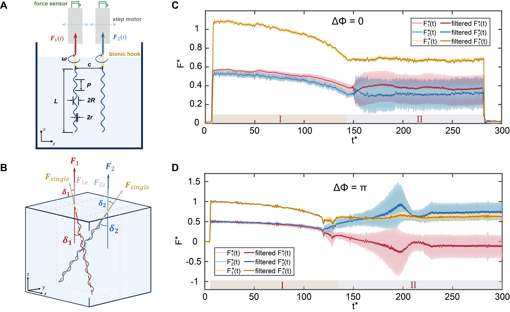

I am a PhD student in Quantitative Biosciences (Physics) in the School of Physics at Georgia Tech, advised by Dr. Peter J. Yunker in the Yunker Lab. My work explores the biophysics of microbial communities, bacterial motion, and the physical signatures of living systems.
I received my M.S. (2023–2025) and B.Eng. (2019–2023) in mechanical engineering from the UM–SJTU Joint Institute, Shanghai Jiao Tong University. My master’s research with Dr. Zijie Qu focused on Bacterial Locomotion in Swimming and Swarming Motilities.
2024 · Harbin, China13th Chinese Fluid Mechanics Academic Conference
Study on Microbial Flagellar Bundling Process and Propulsive Force Generation Based on Macroscopic Experimental Model
Earlier research & engineering projects +
Study on Enterobacter sp. SM3 swarming under Different Conditions
Verifying influences of gravity and solid boundary to bacterial swarming by monitoring the colony growth microscopically and microscopically, using self-developed imaging platform to record and quantitate and microscope
Analyzing characteristic velocity, length, and time scales for bacterial motion in different areas of the swarming colonies (edge, near-edge, far-edge) by using particle image velocimetry (PIV) and optical flow methods
Building a theoretical model to explain the growth of swarming colony affected by gravitation force and under solid surface constrain based on experimental results and analysis
Experimental Study on Microbial Movement under Interface Constraint
Applying a 3D real-time tracking microscope to track the swimming microorganism for long time (> 15 s)
Measuring the swimming characteristics, including speed distribution, trajectory curvature, of smooth-swimming E. coli on near solid surfaces (glass slides) and semi-solid surfaces (non-nutrient agar of different concentration)
Building a theoretical model to explain the trends of “pusher” type cells’ attraction to softer surfaces
A Macroscopic Model of Bacterial Flagella Interaction and Propulsion Generation
Designed and Developed a multi-functional macroscopic experimental platform to test model bacterial flagella interaction and propulsion generation under different parameters including separation distance and phase difference
Observed the differences of individual contribution from each filament to total propulsion force when phase difference existed, and revealed hydrodynamic interactions reached maximum when phase difference equals to π and - π
Proposed a bacterial swimming model to explain the “wobble” phenomenon in E. coli locomotion based on experimental results of unequal propulsion forces generated by individual filaments in a bundle

Microfluidic Robot Powered by Electroosmosis-based Electrode Arrays
Simulated liquid pumping with ac-voltages applied to asymmetric electrode pairs by COMSOL, and obtained optimal electrodes pair size ratio of 5:3 under V_max = 16 V and 3 kHz frequency with experiment verification
Achieved 3 μm/s swimming speed of a 1.8 mm*1.3 mm chip with 5 sets of 20-electrodes-array applying travelling-wave electroosmosis (TWEO) under V_max = 1.5 V and 4 kHz frequency in experiments based on simulation
Multi-material Direct Ink Writing 3D Printer Construction
Designed the structure of a new easily-assembled DIW printing extruder that lower the cost by 30%
Investigated the impact of different infill density, infill patterns and surface density, on material properties of 3D-printed objects by optimizing traditional 3D printer G-code generating logic to three different methods
Research and Design of the Package Loading Mechanism for UAV Logistics
Designed and manufactured the mechanical structure as well as the electronic control system for different scenarios such as emergency medical service, fresh food delivery and rural logistics
Made the wind tunnel fluid simulation of the mechanical structure by Ansys cfx and optimized the shape of our products to minimize the wind drag
Name in bold; * equal contribution. Preprints are under review.
01
Bian, H., Li, C., Lin, Z., Zhu, J., Chen, W., Li, G., Huang, Y., & Qu, Z. (2026). Active turbulence in shear-thinning fluid.Physical Review Research 8, 013318. DOI ↗
02
Li, C., Bian, H., Qiao, Y., Zhu, J., & Qu, Z. (2025). Hydrodynamic interaction leads to the accumulation of Chlamydomonas reinhardtii near a solid–liquid interface.Physical Review E 111, L052401. Editor’s SuggestionDOI ↗
03
Zhu, J.*, Qiao, Y.*, Yan, L., Zeng, Y., Wu, Y., Bian, H., Huang, Y., Ye, Y., Huang, Y., Hii, R. C. W., Teng, Y., Guo, Y., Li, G., & Qu, Z. (2025). Propulsion contribution from individual filament in a flagellar bundle.Applied Physics Letters 126, 073702. DOI ↗
04
Cai, R., Niazi, M. D. K., Ai, Y., Zhu, J., Wu, L., & Lu, X. (2025). Fully integrated self-propelling microrobot in 180 nm CMOS with sub-GHz parity-time-symmetry on-chip energy harvesting and traveling wave electroosmosis actuation.IEEE International Solid-State Circuits Conference (ISSCC), pp. 1–3. DOI ↗
05
Lin, Z.*, Zhu, J.*, Bian, H., & Qu, Z. (2026). Hydrated porous substrates modulate the spatiotemporal dynamics of bacterial turbulence.arXiv. arXiv:2611.04668 ↗. (Under Review)
06
Gu, P., Lin, Z., Ren, H., Zhu, J., Li, A., Said, O., Chen, W., & Qu, Z. (2026). Inclined surfaces bias bacterial swarming expansion and edge organization.arXiv. arXiv:2610.01281 ↗. (Under Review)
07
Krueger, A., Bogati, B., Copeland, R., Hejri Bidgoli, M. S., Zhu, J., Weiss, D. S., & Yunker, P. J. (2026). Rapid bacterial identification through biophysical surface topography features.bioRxiv. DOI ↗. (Under Review)
08
Duan, S., Wang, Z., Xiong, K., Zhu, J., Gu, P., Chen, W., Xin, H., & Qu, Z. (2026). Population-scale advancing interface modeling reveals how bacterial swarms encode future spatial architecture.arXiv. arXiv:2602.01056 ↗. (Under Review)
04 / NEWS
Along the way
Research updates & milestones.
2026/11 Our preprint Hydrated porous substrates modulate the spatiotemporal dynamics of bacterial turbulence is available on arXiv.
2026/10 Our preprint Inclined surfaces bias bacterial swarming expansion and edge organization is available on arXiv.
2026/08 Started the InQuBATE Fellowship at Georgia Tech.
2026/07 Joined QBioS SGA at Georgia Tech.
2026/03 Our preprint Rapid bacterial identification through biophysical surface topography features is available on bioRxiv.
2025/11 Presented my research named “Complex Porous Surface Modulate Bacterial Turbulence” and “Propulsion Contribution from Individual Filament in Flagellar Bundle” in 78th Annual Meeting of the APS Division of Fluid Dynamics in Houston, Texas.
2025/08 I joined Yunker Lab in Georgia Tech and started my PhD program in Quantitative Biosciences (QBioS).
2025/08 I successfully defended my Master thesis named as Bacterial Locomotion in Swimming and Swarming Motilities.
2025/07 Presented my research named “Complex Porous Surface Modulate Bacterial Turbulence” in Chinese Congress of Theoretical and Applied Mechanics-2025 in Changsha, China.
2025/02 My first paper “Propulsion Contribution from Individual Filament in Flagellar Bundle” got accepted by Applied Physics Letters Appl. Phys. Lett. 126, 073702 (2025).
2024/08 Presented my research named “Sudy on Microbial Flagellar Bundling Process and Propulsive Force Generation Based on Macroscopic Experimental Model” in the 13th Chinese Fluid Mechanics Academic Conference in Harbin, China.
2024/07 My first paper “Propulsion Contribution from Individual Filament in Flagellar Bundle” is now available in arXiv as arXiv:2407.16532.
2023/07 Passed Chun-Tsung Program and awarded the honorary title of “Chun-Tsung scholar”.
2022/12 The Capstone project “Macroscopic model of bacterial flagella interaction and propulsion generation” won the Gold award at the 2022 Winter Design Expo.